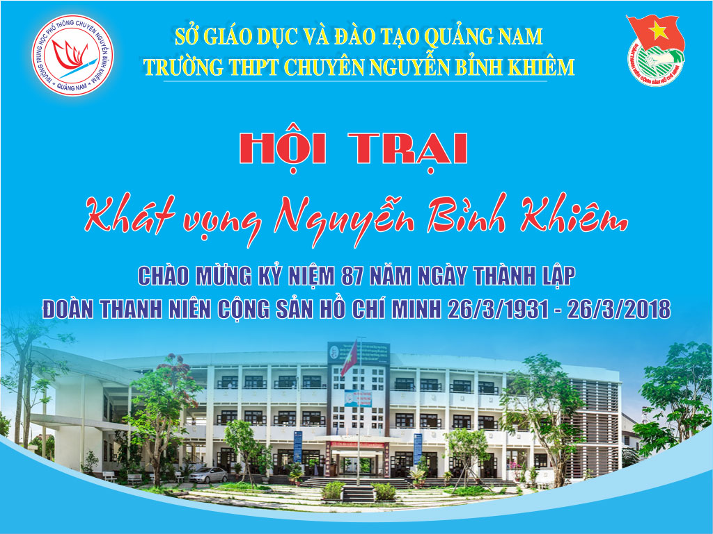

Kế hoạch và Nội quy Hội trại Khát vọng Nguyễn Bỉnh Khiêm

Lần cập nhật cuối lúc Thứ bảy, 24 Tháng 2 2018 15:50 Viết bởi Administrator Thứ tư, 21 Tháng 2 2018 10:15

A. MỤC ĐÍCH
- Hướng tới kỷ niệm 87 năm ngày thành lập Đoàn Thanh Niên Cộng Sản Hồ Chí Minh (26/3/1931 – 26/3/2018)
- Nhằm tuyên truyền giáo dục cho học sinh về vai trò lãnh đạo của Đảng trong thời kỳ mới; thực hiện có hiệu quả cuộc vận động “Học tập và làm theo tấm gương đạo đức, phong cách Hồ Chí Minh”. Từ đó, học sinh tiếp tục rèn luyện, cống hiến và xác định trách nhiệm của tuổi trẻ trong công cuộc xây dựng và bảo vệ Tổ quốc Việt Nam xã hội chủ nghĩa;
- Tạo điều kiện cho học sinh có sân chơi lành mạnh, vui khỏe, giao lưu học tập kinh nghiệm lẫn nhau;
- Giúp cho học sinh môi trường hoạt động ngoại khóa, giáo dục kỹ năng sống, nhằm tạo cho tập thể và cá nhân biết xây dựng kế hoạch, tổ chức thực hiện có hiệu quả các hoạt động, đảm bảo đúng yêu cầu của nhà trường đề ra, với chủ đề: "KHÁT VỌNG NGUYỄN BỈNH KHIÊM"
B. THÀNH LẬP BAN TỔ CHỨC
I. Trưởng ban
Thầy Phan Văn Chương: Quyền Hiệu trưởng – Trại trưởng; chịu trách nhiệm chung.
II. Phó ban
+ Thầy Phạm Hữu Hùng – Phó Bí thư Đảng bộ: Phụ trách chung phần nội dung
+ Cô Phạm Thị Huyền – Phó hiệu trưởng - Phụ trách các nội dung sinh hoạt trại, nội dung thi.
+ Thầy Đinh Gia Thiện - Phụ trách ngoại giao, tiếp đón đại biểu, khách mời.
+ Thầy Phan Văn Lĩnh – Chủ tịch Công đoàn: Phụ trách chung hậu cần, ban vận động.
+ Thầy Châu Văn Thọ ¬- BT Đoàn trường; Trại phó - Phụ trách chung cơ sở vật chất, lửa trại.
III. Các ủy viên
+ Thầy Nguyễn Xuân Tùng - PBT – Phụ trách trò chơi lớn, hội thi múa hát tập thể.
+ Thầy Nguyễn Văn Quang - CTLHTN - Phụ trách đội cờ đỏ, điểm thi đua
+ Thầy Nguyễn Thành Khoa – Tổ trưởng tổ Sử, Địa - Phụ trách điểm thi đua, kỷ luật , vệ sinh đất trại;
+ Thầy Trương Văn Quang - Tổ trưởng Tổ Văn - Phụ trách nôi dung thi viết thư pháp.
+ Thầy Nguyễn Ngọc Ân – Tổ trưởng tổ Ngoại Ngữ - Phụ trách nội dung tiếp đón đại biểu và cựu học sinh.
+ Thầy Giáp văn Thức, Thầy Hồ Ngọc Quốc – Tổ trưởng - Phụ trách nội dung trò chơi lớn;
+ Thầy Võ Quốc Châu– Tổ trưởng tổ Thể dục - Phụ trách các trò chơi nhỏ.
+ Thầy Nguyễn Xuân Tùng – Phó bí thư Đoàn trường - Phụ trách chấm điểm cổng lều trại
+ Cô Huỳnh Thị Hiền – Tổ trưởng tổ Sinh - Phụ trách chấm điểm phần thi ẩm thực;
+ Thầy Nguyễn Văn Như – Tổ trưởng tổ Tin - Phụ trách nhập điểm cộng điểm thi đua.
+ Cô Nguyễn Thị Thảo Hiếu - Phụ trách tài chính, chi tiêu.
+ Anh Võ Hùng Phi – Tổ trưởng tổ Văn phòng - Phụ trách công tác hậu cần
IV. Các tiểu ban
1. Ban thi đua, kỷ luật
Trưởng ban: Thầy Nguyễn Thành Khoa – Tổ trưởng Phụ trách điểm thi đua kỹ luật.
Các thành viên:
+ Thầy Nguyễn Văn Quang
+ Thầy Nguyễn Thanh Liêm
+ Thầy Lê Đình Nhật
+ Thầy Trần Văn Mười,
+ Cô Phạm Thị Thanh Tâm
+ Cô Nguyễn Thị Thùy Dương
2. Ban trò chơi nhỏ
Trưởng ban: Thầy Võ Quốc Châu– Tổ trưởng tổ Thể dục.
Các thành viên:
+ Thầy Phan Hữu Kha
+ Thầy Huỳnh Đức Tỉnh
+ Thầy Nguyễn Viết Minh
+ Thầy Nguyễn Văn Quang
+ Thầy Nguyễn Văn Kỳ
+ Thầy Trần Minh Thắng
+ Thầy Phan Văn Lĩnh
+ Thầy Nguyễn Phước Hào
+ Thầy Văn Phú Quốc
+ Thầy Trương Ngọc Điểu
+ Thầy Võ Quốc Á
+ Thầy Võ Tiến
+ Thầy Nguyễn Thanh Thiên
3. Ban trò chơi lớn
Thầy Giáp Văn Thức - Trưởng ban
Thầy Võ Quốc Châu, Thầy Châu Văn Thọ, Thầy Nguyễn Xuân Tùng, Thầy Nguyễn Văn Quang, Thầy Huỳnh Đức Tỉnh, Thầy Văn Phú Quốc, Anh Nguyễn Hữu Tài, Cô Nguyễn Thị Quỳnh Trâm, Cô Phạm Thị Thanh Tâm, Cô Trịnh Thị Hồng Linh
4. Ban lều trại
+ Trưởng ban: Thầy Nguyễn Xuân Tùng
+ Các thành viên:
+ Thầy Trương Văn Quang
+ Cô Lê Thị Thương
+ Thầy Trần Minh Thắng
+ Thầy Bùi Thanh Sơn
5. Ban phụ trách ánh sáng, âm thanh, đất trại
+ Trưởng ban:Thầy Nguyễn Văn Quang
+ Các thành viên
+ Anh Nguyễn Văn Chương
+ Trần Công Biểu
+ Nhạc công
+ Thợ điện
6. Ban chấm điểm nữ công gia chánh, thi ẩm thực
Trưởng ban: Cô Huỳnh Thị Hiền – Tổ trưởng tổ Sinh
Các thành viên:
+ Cô Nguyễn Thị Thúy Trâm
+ Cô Nguyễn Thị Trúc Đào
+ Cô Phạm Thị Ái Vân
+ Cô Lê Thị Thương
+ Cô Nguyễn Thị Mỹ Dung (Hóa)
+ Cô Trần Thị Thanh Tùng
+ Cô Nguyễn Thị Diêu
+ Cô Nguyễn thị Mỹ Dung (Lý)
+ Thầy Lê Viết Hà
+ Thầy Võ Quốc Châu
7. Ban nhật ký hội trại
+ Cô Ngô Thị Minh Thủy - Trưởng ban
Các thành viên:
+ Thầy Nguyễn Tấn Ái
+ Cô Nguyễn Thị Thu Thủy
+ Cô Trịnh Thị Hồng Linh
8. Ban văn nghệ, múa hát tập thể, nhảy sạp
Trưởng ban: Thầy Nguyễn Xuân Tùng
Các thành viên:
+ Cô Nguyễn Thị Trúc Đào
+ Cô Lê Thị Thương
+ Anh Nguyễn Hữu Tài phụ trách máy tính mở nhạc thi
9. Ban hậu cần
- Trưởng ban: Anh Võ Hùng Phi
- Các Thành viên: Tổ Văn phòng
10. Trại trưởng các trại
Trưởng ban: GVCN các lớp, Trại phó- lớp trưởng các lớp
11. Ban lửa trại
Thầy Bùi Thanh Sơn, Thầy Trân Minh Thắng,
12. Ban trang trí sân khấu, dựng lều trung ương
Trưởng ban: Thầy Ôn Quang Hùng - Bí thư chi đoàn giáo viên
Phó ban Thầy Nguyễn Văn Quang
Các thầy cô trong chi đoàn giáo viên
13. Tuyền truyền, quảng bá trên website trường
BCH đoàn trường, Anh Võ Hùng Phi (kỹ thuật)
14. Ban quản trại
Trưởng ban: Thầy Phan Văn Chương
Các thành viên: Thầy Châu Văn Thọ, Thầy Nguyễn Xuân Tùng, Thầy Nguyễn Văn Quang
15. Y tế: Cô Nguyễn Thị Thảo Hiếu
16. Bảo vệ: Anh Nguyễn Văn Chương, Anh Trần Công Biểu, Nguyễn Văn Tập lực lượng Công an, dân phòng.
17. Vệ sinh các khu vực nhà trường và phòng học
Cô Phạm Thị Phương Tùng, Cô Loan, công ty vệ sinh và toàn thể học sinh(GVCN phụ trách)
V. PHÂN CÔNG KẾ HOẠCH, THỜI GIAN CỤ THỂ
Chiều thứ hai (5/02/2018) họp liên tịch phân công các trưởng tiểu ban xây dựng kế hoạch trại.
Chiều thứ năm (8/02/1018) tập huấn muá hát tập thể kỹ năng trại, trò chơi lớn (BCH đoàn trường)
Chiều thứ sáu (9/02/2018) tập huấn kỹ năng trại, trò chơi lớn (Thầy Thức và BCH đoàn trường)
Họp các trưởng tiểu ban, các tiểu ban xây dựng kế hoạch nội dung các trò chơi gửi về cho BTC vào ngày 21/2/2018.
Lưu ý: Ban nữ công 2 nội dung thi, ban trò chơi nhỏ 6 trò chơi.
VI. CHƯƠNG TRÌNH SINH HOẠT TRẠI
1. Thời gian: 2 ngày từ 6 giờ ngày 26 tháng 2 đến 16 giờ ngày 27 tháng 2 năm 2018 (11,12 tháng giêng âm lịch)
2. Địa điểm: Trường THPT chuyên Nguyễn Bỉnh Khiêm
3. Yêu cầu: Tất cả CBGV- CNV và học sinh đều tham gia
Mỗi trại có lều chính và lều phụ, tất cả đều sử dụng bóng đèn Compact để tiết kiệm điện, không nấu cơm điện tại đất trại.
- Nội quy Hội trại "Khát vọng Nguyễn Bỉnh Khiêm"
|
TRƯỜNG THPT CHUYÊN |
CỘNG HOÀ XÃ HỘI CHỦ NGHĨA VIỆT NAM Độc lập - Tự do - Hạnh phúc |
| BAN TỔ CHỨC HỘI TRẠI | Tam Kỳ, ngày 22 tháng 02 năm 2018 |
NỘI QUY HỘI TRẠI
"KHÁT VỌNG NGUYỄN BỈNH KHIÊM"
1. Trại sinh tập trung đúng thời gian và địa điểm quy định. Bảo đảm giờ nào việc nấy. Phải đeo thẻ trại sinh trong suốt thời gian tham gia hội trại. Trang phục lịch sự, phù hợp với phong cách học sinh và các hoạt động Hội trại (Trang phục theo quy định của BTC).
2. Tôn trọng chấp hành đúng luật khi tham gia giao thông. Không sử dụng xe gắn máy.
3. Phát huy tinh thần xung kích, năng động, sáng tạo và đoàn kết trong suốt quá trình Hội trại; không được có thái độ thi đua không lành mạnh, cạnh tranh gay gắt, gây mất tinh thần đoàn kết giữa các trại sinh và giữa các tiểu trại.
4. Tham gia tất cả hoạt động của tiểu trại và toàn Hội trại.
5. Nắm chủ đề, trại ca, khẩu hiệu trại, hiệu lệnh tập trung và nắm rõ thời gian hoạt động của trại.
6. Thực hiện đúng nội quy của nhà trường. Không bẻ phá các loại cây kiểng trong trường, không tự ý đốt và giữ lửa. Giữ gìn vệ sinh chung. Không tự ý sử dụng các vật dụng, cơ sở vật chất, trang thiết bị của nhà trường. Đảm bảo tuyệt đối an toàn về điện trong phòng chống cháy nổ.
7. Cấm trại sinh sử dụng bia, rượu, cờ bạc trong Hội trại. Không tự ý ra khỏi trường trong thời gian Hội trại.
8. Sau khi kết thúc tổ chức các trò chơi, thi nấu ăn, từng địa điểm, các tiểu trại và trại sinh phải đảm bảo nơi tổ chức sạch sẽ, phòng học ngăn nắp và trả lại “nguyên vẹn hiện trường” như khi tiếp nhận.
9. Đảm bảo thực hiên đúng giờ giấc của Ban tổ chức đưa ra, sinh hoạt phù hợp, không làm ảnh hưởng đến giờ nghỉ ngơi của trại sinh khác (nhất là giờ nghỉ trưa và tối). Không được sử dụng âm thanh riêng của trại khi chưa được cho phép và phải tắt khi BTC yêu cầu.
10. Tiểu trại trưởng chịu trách nhiệm về nội dung hoạt động và tác phong, kỷ luật của tất cả trại sinh trong tiểu trại. Phải đảm bảo quân số và các nội dung hoạt động của trại. Trại sinh ra vào cổng phải có phiếu của BTC. Không đưa người lạ vào trại. Mọi vấn đề phát sinh phải báo ngay với Ban tổ chức và Ban chỉ huy. Không được tự ý thay đổi chương trình.
* Để Hội trại diễn ra thành công tốt đẹp, đề nghị các tiểu trại trưởng nghiêm túc phổ biến nội quy cho toàn thể trại sinh biết để thực hiện.
TM. BAN TỔ CHỨC
Tải nội quy Hội trại "Khát vọng Nguyễn Bỉnh Khiêm" tại đây
- 26/12/2018 14:27 - Thông báo tổ chức kì thi AMC10-12 năm 2019
- 02/12/2018 00:00 - Kế hoạch tổ chức cuộc thi đường lên đỉnh Olympia 2…
- 12/09/2018 10:07 - Trường THPT chuyên Nguyễn Bỉnh Khiêm khai giảng nă…
- 24/08/2018 08:31 - Chỉ thị về nhiệm vụ chủ yếu năm học 2018 - 2019 củ…
- 08/06/2018 08:48 - Học với thiên nhiên hiện thực hóa các bài giảng lý…
- 29/12/2017 09:43 - Nghiên cứu sinh Phạm Thị Huyền – Phó Hiệu trưởng b…
- 17/12/2017 20:58 - Trường THPT chuyên Nguyễn Bỉnh Khiêm và Trường Đại…
- 02/12/2017 08:21 - KỶ NIỆM 35 NĂM NGÀY NHÀ GIÁO VIỆT NAM 20-11 THPT C…
- 24/11/2017 07:41 - Phát động tham gia hưởng ứng Cuộc thi Những tấm gư…
- 26/10/2017 00:00 - Đại hội Đại biểu Đoàn TNCS trường THPT Chuyên Nguy…